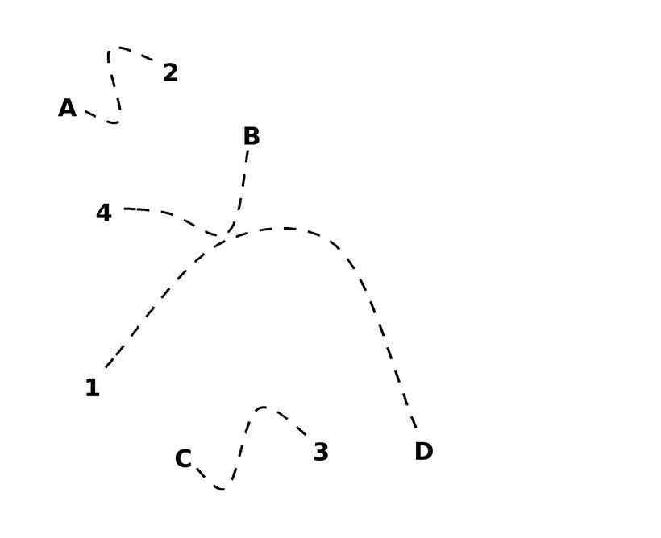
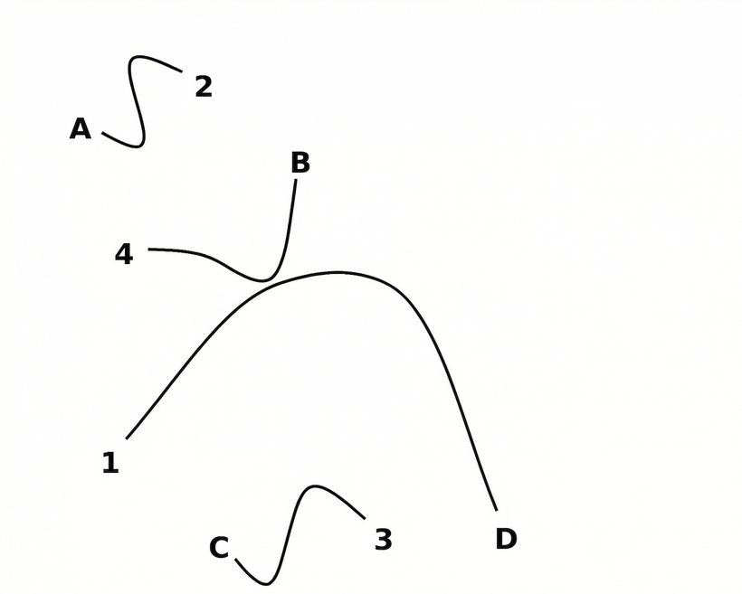

User
Trace the lines to match each number (1, 2, 3, 4) to its corresponding letter (A, B, C, D).

ReImaGin · Handcrafted strategy · Reasoning summary
The dashed lines are difficult to follow reliably. I’ll make them solid before tracing them.
“convert the dashed lines into solid lines.”

Answer: DACB ✓